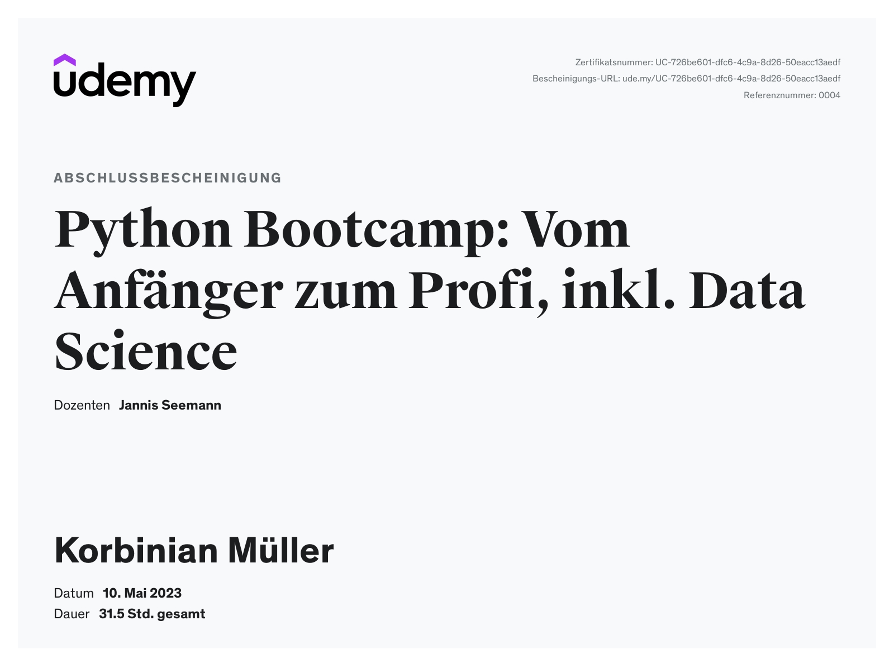
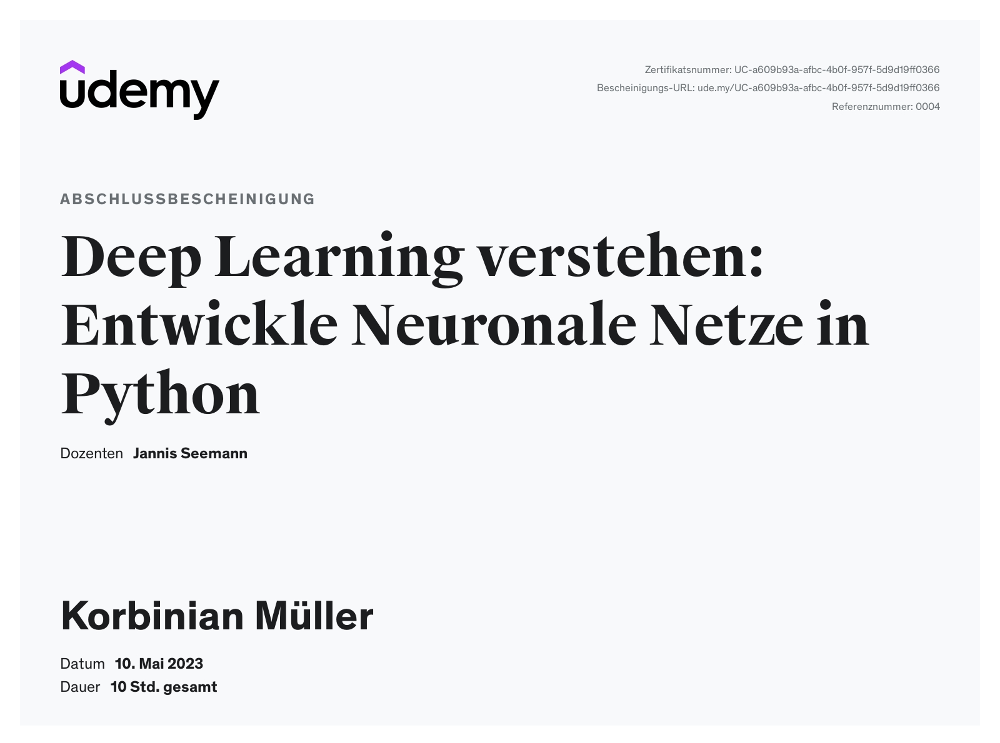

Ich habe angefange Python während dem ersten Corona Lockdown zu Lernen. Dabei habe ich Kurse von Udemy verwendet.


Meine programmier Kenntnisse habe ich anschließend mit den Büchern weiter vertieft
Gewappnet mit dem Wissen und Ideen aus den Büchern habe ich mein eigenes Projekt gestartet
Die Idee: einen Bot entwickeln, der selbständig sich bei Instagram eingeloggt, Content hochlädt und Follower generiert indem er mittels hashtags anderen Läuten folgt.
Die Implementation dazu finden sie auf meinem GitHub unter Sparaw/Insta_star
Das Projekt selbst funktioniert, jedoch sind einige Probleme aufgetreten:
Das Einloggen und Navigieren erstellte sich als ein großes Problem. Instagramm, ändert in regelmäßigen Abständen den Aufbau der Webseite. Genauergesagt die benennung der Knöpfe und Eingabefelder. Deswegen muss in regelmäßigen Abstände der Webcrawler abgeändert werden.
Ein weiters Problem war der Upload der Videos. Die Interaktivität mit dem Upload feld erstellte sich als ausgesprochen Schwierig. Es wurde mittels einer Automatisierung von Maus und Tastatur ermöglicht.
Zuguter letzt ist die Boterkennung von Instagram ausgezeichnet. Deswegen wurden die Konten sehr schnell als Bots identifiziert. Dies führte dazu, dass die Nutzerkonneten schnell gesperrt wurden.